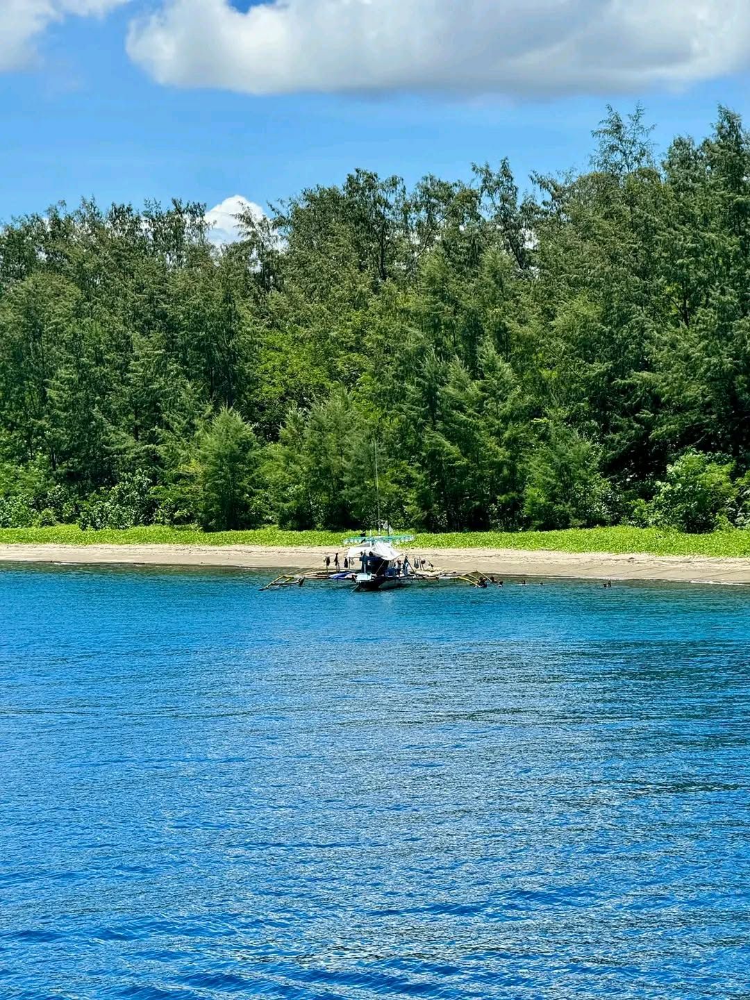
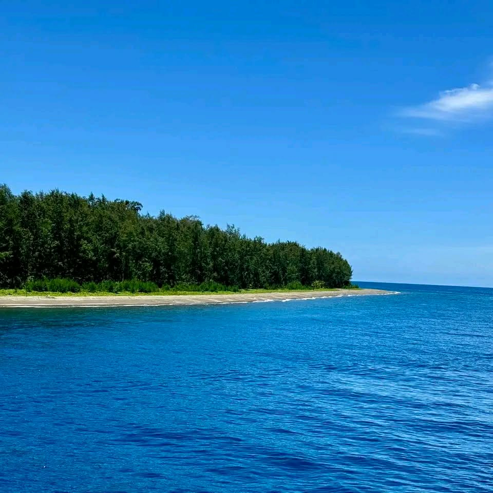
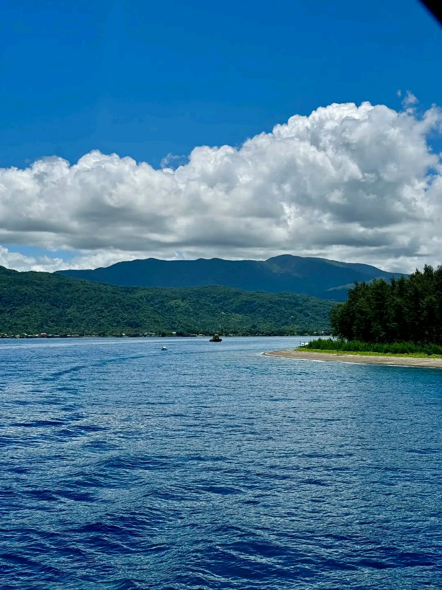
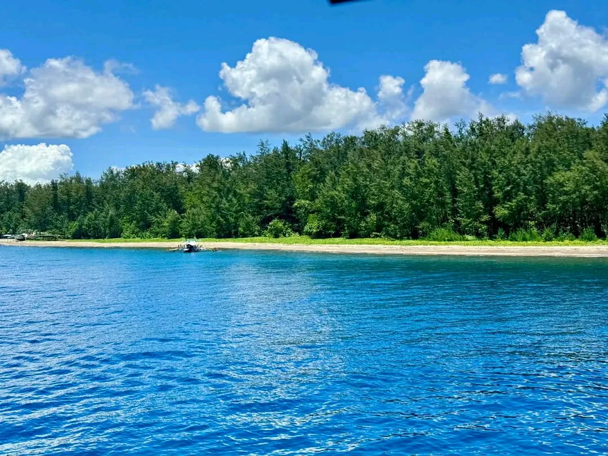

Overview
Baluti Island is ideal for beach relaxation, sunbathing, swimming, and enjoying calm coastal landscapes surrounded by Lamon Bay waters.
Small island getaway in Real, Quezon with sandy beaches, clear waters, and relaxing coastal scenery perfect for swimming and picnicking.

Baluti Island is ideal for beach relaxation, sunbathing, swimming, and enjoying calm coastal landscapes surrounded by Lamon Bay waters.

Located in Brgy. Ungos, Real, Quezon. Accessible via a short motorized boat ride from Real’s coastal area after arriving by private vehicle or public transport.

Small island with sandy beaches, pine and coastal vegetation, surrounded by clear waters of Lamon Bay, offering a scenic and tranquil environment.
